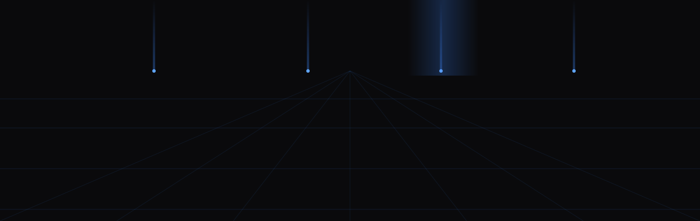

A control-plane horizon — each beacon represents a sample project. Choose a project below to bring it on stage.
Illustrative project content and metrics — design placeholders, not verified outcomes.
Spike Portfolio B — quieter 48vh backdrop keeps scan speed; the value is the selected-project stage: outcomes are front-and-center, the selector is a real keyboard/tab-navigable list (arrow keys move selection), so list semantics survive. Use with Variant A's hero, or standalone.